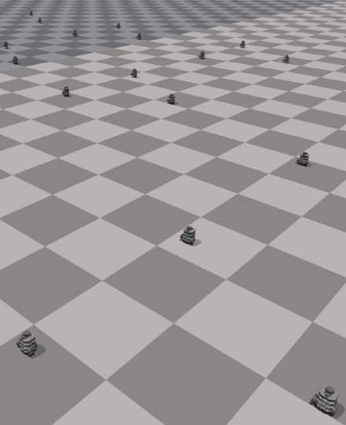
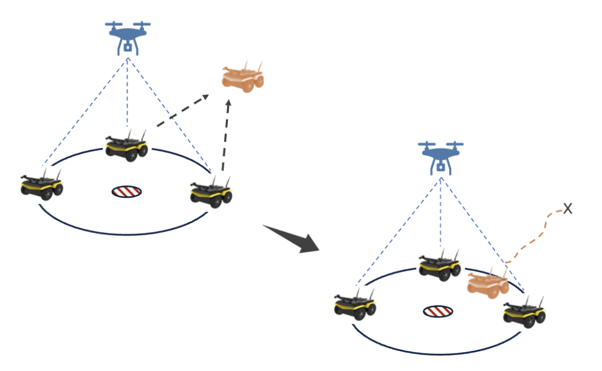
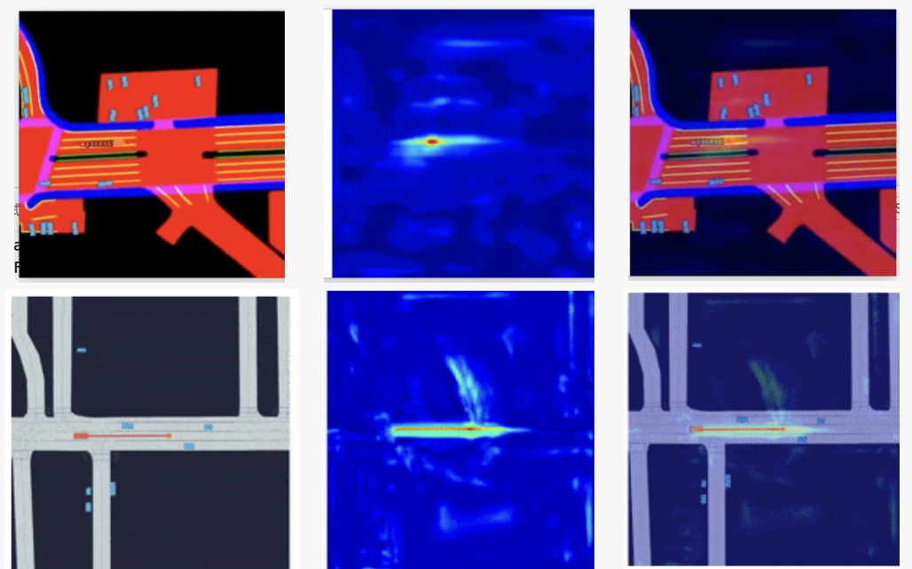

|
Jinyuan Zhang I'm currently a second-year Robotics MSE student at the GRASP Lab at the University of Pennsylvania, advised by Prof. Vijay Kumar and Yuwei Wu. Previously, I received my BEng in Electronic and Electrical Engineering from University College London (UCL), where I was advised by Prof. Boli Chen. I am focusing on developing collaborative robotic systems. My current work explores learning-based control, multi-agent coordination, and scalable algorithms that support robust cooperation in complex environments. |
· |
{kind=link}
Research Projects |
|  |
Learning Adaptive Formation Control for Multi-Robot Coordination in Constrained Environments
Topics: MAS, RL, Formation Control, LLM Argumentation
paper /
code
Multi-robot teams need to coordinate their formation so as to fit the constraints of the environment. How to maintain and adapt the formation to navigate narrow, complex environments with minimal deformation while preserving its structural properties? We proposed a hierarchical learning framework, where a high-level module centrally reasons about the next best waypoint for each robot, and a low-level module executes decentralized multi-agent control driven by multi-agent reinforcement learning. |
|  |
Distributed Cooperative Control for Multi-Agent Formation and Containment Control in Unknown Environments
Topics: MAS, Distributed Control, Formation Control, Obstacle Avoidance
paper /
code
Designed a distributed, safety-critical control framework for MAS by integrating a leader–follower law with consensus protocols for formation and containment control. Implemented an enhanced Artificial Potential Field (APF) algorithm to ensure robust obstacle avoidance. Validated the framework's efficacy through a simulated robot rescue mission, demonstrating successful target formation and collision-free navigation in cluttered environments. |
|  |
Bi-level Learning for Traffic Simulation
Topics: Imitation Learning, Traffic Simulation, Planning
paper /
code
Implement a bi-level imitation learning framework that decouples traffic simulation into high-level intent inference and low-level goal-conditioned control. The method utilizes real-world driving logs to implement a realistic multi-agent traffic simulator, containing a planning module that ensures diverse behaviors and long-horizon stability. |
Past Projects |
|
|
Quadrotor’s State estimation, Planning and Control
Topics: Aerial Robotics, Motion Planning, Control
paper /
code
Implemented a full-stack autonomy pipeline that integrates visual-inertial state estimation, motion planning, and geometric control. The system fuses stereo vision and IMU data via a quaternion-based Error-State Kalman Filter (ESKF) for 6-DoF pose estimation, generates collision-free, minimum-snap trajectories using an A* approach with differential flatness, and executes precise tracking through a nonlinear SE(3) geometric controller. |
|
|
Autonomous Dynamic Block Stacking with a Franka Panda
Topics: Manipulation, Motion Planning
paper /
code
Developed a complete autonomous manipulation system for a 7-DoF Franka Panda in ROS-Gazebo, integrating AprilTag detection, FK/IK, and real-time control loops. This pipeline enabled the robust stacking of static and dynamic objects through adaptive motion timing and feedback, finally leading the team to win 1st place among 20 competitors, winner of the final competition. |
|
|
Model Predictive Control and Reinforcement Learning for Autonomous Drone Racing
Topics: MPC, RL
paper /
code
Developed an autonomous drone racing control stack by implementing a linear MPC-based tracking controller to follow offline time-optimal paths and PPO/actor–critic algorithms in MuJoCo to train a quadrotor on a circular track for continuous control. |
|
|
End-Effector Design for Robotic Arm
Topics: Medical Robotics
paper /
code
Designed a soft, multi-modal gripper to prevent multiple picks and avoid package defects—validated on the Amazon Robotic Manipulation Benchmark dataset—and an ultrasonic bone knife-based end effector for a surgical robot to remove tumors. |
|
Sourced from this website. |